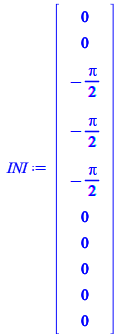
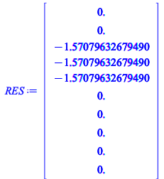
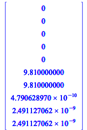
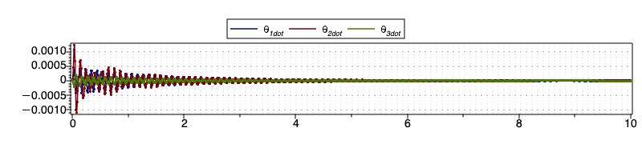
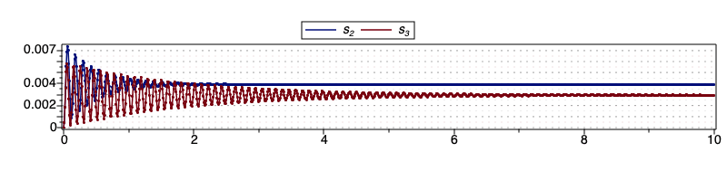
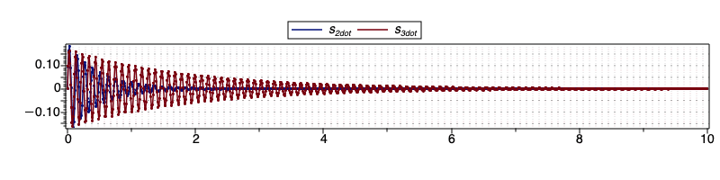

Test forward integration and plots
Define the initial conditions
| > | INI := <0,0,-Pi/2,-Pi/2,-Pi/2,0,0,0,0,0> |
|  | (6.3.3.1) |
| > | RES := PROJECT(INI,0); |
| Warning, no iterations performed as initial point satisfies first-order conditions | |
|  | (6.3.3.2) |
| > | RHS_ODE(INI, 0, Mf, Rf); |
|  | (6.3.3.3) |
| > | RES := ADVANCE( evalf(INI), 0, 10, 0.01,Mf,Rf, true ): |
Plot of theta1dot, theta2dot and theta3dot
| > | dataplot( RES["t"], [ RES["x3"], RES["x4"], RES["x5"] ],symbolsize=1,legend=[theta__1dot,theta__2dot,theta__3dot] ); |
|  |
Plot of s2 and s3
| > | dataplot( RES["t"], [ RES["s__2"], RES["s__3"] ],symbolsize=1,legend=[s__2,s__3] ); |
|  |
Plot of s2dot and s3dot
| > | dataplot( RES["t"], [ RES["x1"], RES["x2"] ],symbolsize=1,legend=[s__2dot,s__3dot] ); |
|  |